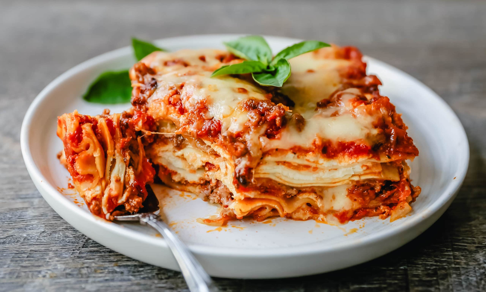

Lasagna

Description
Lasagne are a type of pasta, possibly one of the oldest types, made of very wide, flat sheets. Either term can also refer to an Italian dish made of stacked layers of lasagne alternating with fillings such as ragù (ground meats and tomato sauce), vegetables, cheeses (which may include ricotta, mozzarella, and parmesan), and seasonings and spices, like Italian seasoning, such as garlic, oregano and basil. The dish may be topped with grated cheese, which becomes melted after baking. Typically, cooked pasta is assembled with the other ingredients and then baked in an oven. The resulting casserole is cut into single-serving square portions.
Ingredients
- Puck Bechamel Sauce with Cheese
- Olive Oil
- Onions
- Garlic Crushed
- Beef mince lean
- Canned Chopped Tomato
- Lasagna Sheets
Steps
- Heat oil in a large frying pan. Add onion and garlic and cook for 5 minutes, until softened, then add mince and brown well. Pour in the tomatoes and sprinkle over the dried oregano. Simmer, stirring occasionally, for 10 -15 minutes, until thickened. Season with salt and pepper, to taste.
- Preheat oven to 180 C. Grease a medium oven proof baking dish. Line base with ¼ of the lasagna sheets, trimming to fit if necessary. Spoon 1/3 or the mince mixture over the lasagna, cover with a generous layer of béchamel sauce.
- Repeat the layering twice. Cover béchamel with a layer of lasagna sheets, and spread over the remaining béchamel. Sprinkle over the cheese and bake for 30-40 minutes, until the pasta is tender and cheese is golden brown. Cover with foil if necessary during baking, to prevent cheese from burning.